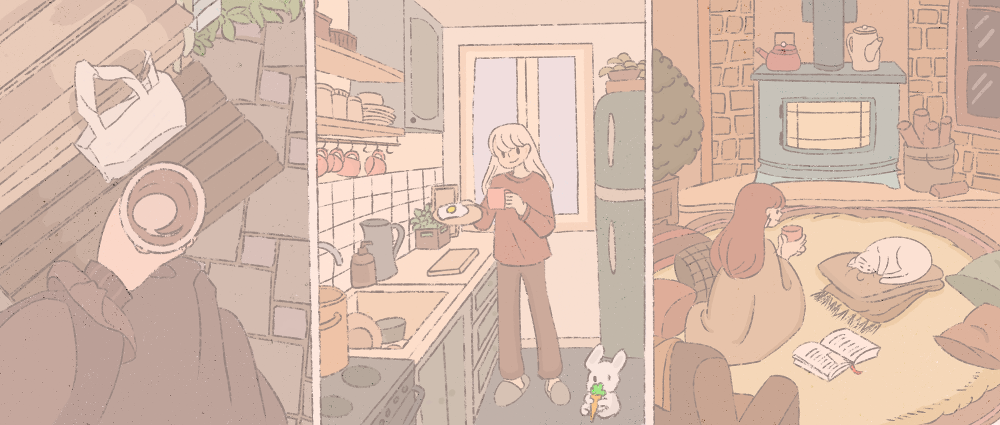
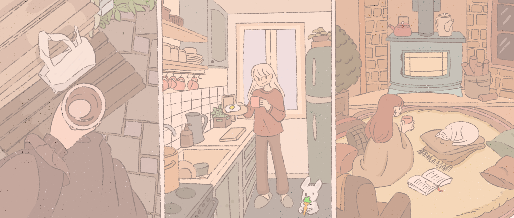

about rosie
a little background about rosie!
She came from a home that is very lonely and her family is always constantly arguing when they gave her up for adoption. She started feeling so ill and hated it there but eventually got used to it. Being in a new setting really scares her but she always adores people. Especially her owners. She would sometimes run away from home when times get tough when she is in a toxic environment but she is still able to open up and stay.
a little bit about Rosie's personality!
Rosie is a little bunny that is one year old!, and she is very happy and always curious about small things. She loves to play and bother people. She knows when you need to take a break from work to play with her. She loves boxes. She likes her own time sometimes but still likes being around people a lot. And loves to get pat.
Rosie's food diet needs
A little bit of a POV from rosie:
Hello, my name's Rosie! I am 1 years old and I'm a happy, curious little ball of bunny fun and I'm on the lookout for my perfect family! I would love a home where I am free to roam and make it my own. I love to run through tunnels, explore and play in boxes. Some rabbit safe toys to chew on sound great to me! A home with kids may suit me, as long as they are gentle and respect my space. I do enjoy being stroked and patted. I may like to live with other bunnies like a pending meet and greet, aka bunny date ;)